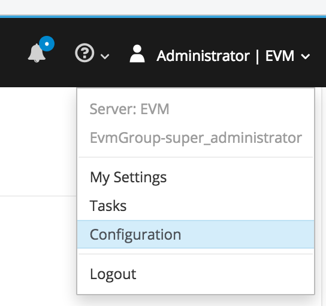
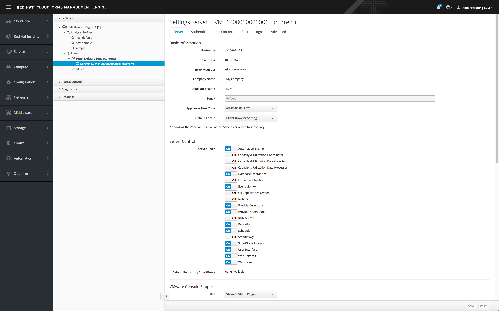
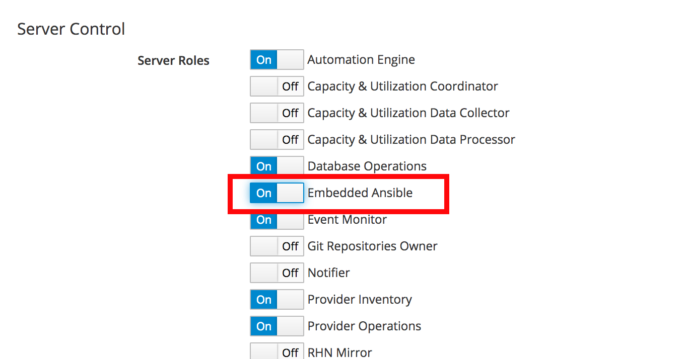
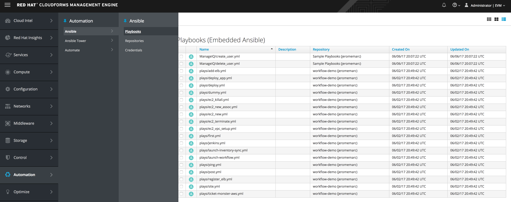
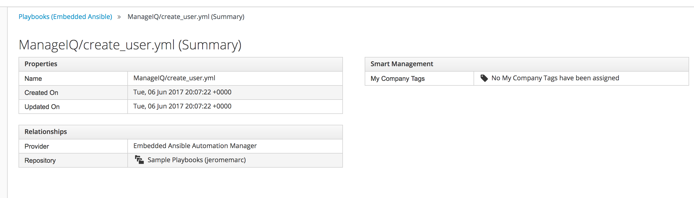
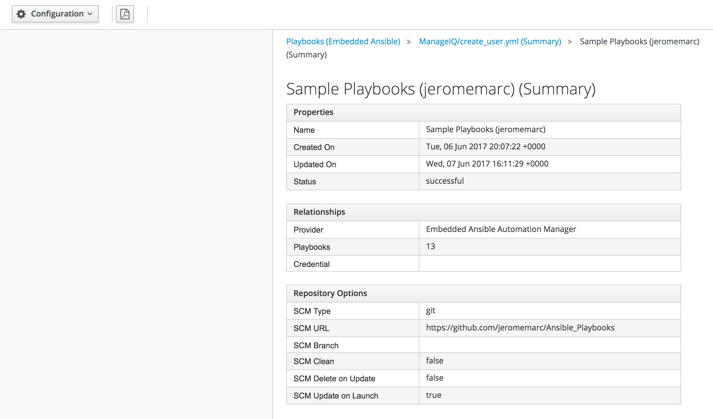
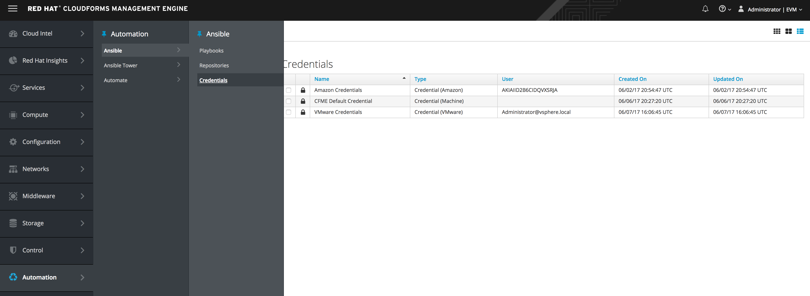
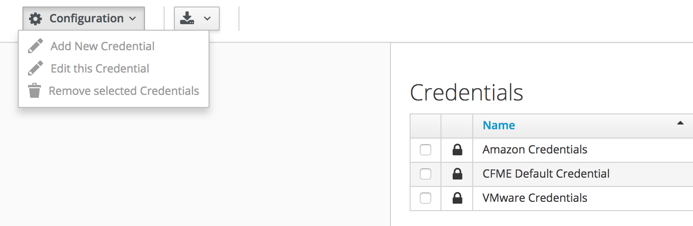
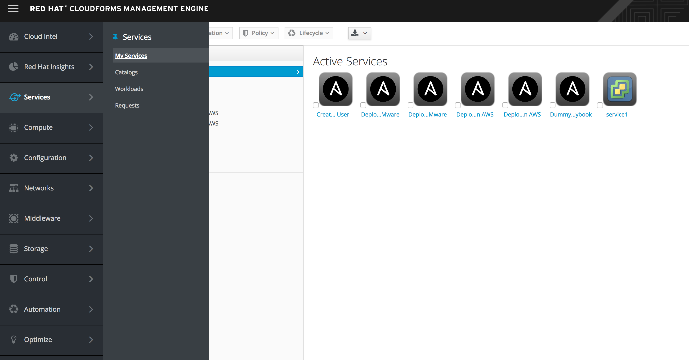
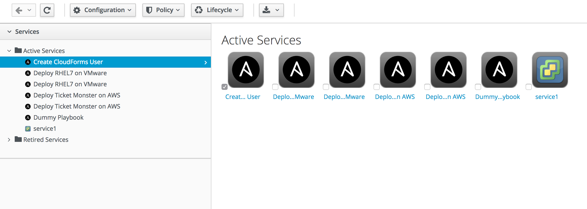

Red Hat Ansible integration delivers out-of-the-box support for backing service, alert and policy actions using Ansible playbooks. Sync your existing playbook repositories with CloudForms, add credentials to access providers, and create service catalog items for actions ranging from creating and retiring VMs, updating security software, or adding additional disks when space runs low.
Ansible integrates with Red Hat CloudForms to provide automation solutions, using playbooks, for Service, Policy and Alert actions. Ansible playbooks consist of series of plays or tasks that define automation across a set of hosts, known as the inventory.
Ranging from simple to complex tasks, Ansible playbooks can support cloud management:
| Services | Allow a playbook to back a CloudForms service catalog item. |
| Control Actions | CloudForms policies can execute playbooks as actions based on events from providers. |
| Control Alerts | Set a playbook to launch prompted by a CloudForms alert. |
This should already be done for you.

This should already be done for you.


You will now see Ansible Playbooks. These playbooks are samples from GitHub

ManageIQ/create_user.yml
From here we can see properties such as when it was uploaded and where the playbook came from. 
If you click on "Repository" you can see even more detail about the Playbook.

Ansible is built into CloudForms so there is nothing to install.
| The basic workflow when using Ansible in Red Hat CloudForms is as follows: | |
|---|---|
| 1. Add a source control repository that contains your playbooks. | |
| 2. Establish credentials with your inventory. | |
| 3. Back your services, alerts and policies using available playbooks. |
Red Hat CloudForms can store credentials used by playbooks. Credentials saved in CloudForms are matched and executed with a playbook when run.

Automate / Ansible / Credentials
From here you would add a credential adding the Name and Type and actual credential.

Services / My Services / Create CloudForms User


Now this Ansible Playbook can be offered up as a Service item with CloudForms controlling the access and lifecycle of the automation action.
In this exercise we’ve seen how simple it is to add and use Ansible Playbooks. Ansible with it's 1300+ modules makes the sky the limit when it comes to automation actions you can perform or offer up as a service in CloudForms.